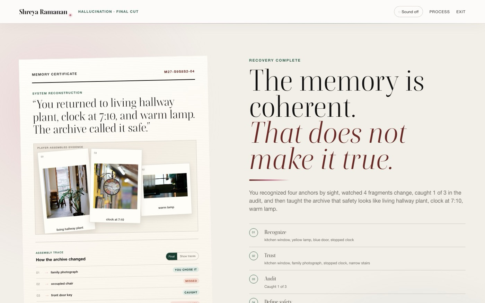

The finished projects live on the Works page. This is where their supporting material belongs: early proposals, direct play links, weekly studies and the decisions that connect them.
03 illustrated entries · newest first

Final cut · November 2026
Entry 03 · Play note
Play the final cut.
Four stages ask what happens when a system edits the evidence around your choices.
This direct entry point is useful when someone wants the experience without reading the complete case study first. The game now moves from recognition to drift, audit and a final decision about whether the reconstructed memory deserves certification.
The first proposal turned “hallucination” into a playable question about evidence and confidence.
The early version established the central loop: observe, choose and receive a confident answer from a system that may not deserve that confidence. It also records the branching plan and the interaction sketch that later became the finished four-stage experience.
Rules, creative agency, case studies and custom AI workflows became a method for making decisions visible.
The course studies are not separate finished projects. They document how the larger work developed: translating a mood into measurements, specifying a room as a system, testing interaction rules and recording where AI assistance ended and my judgment began.